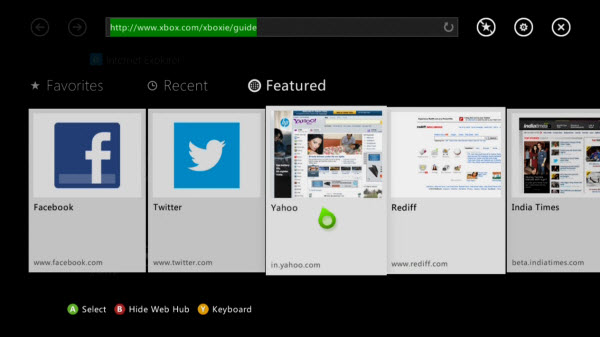
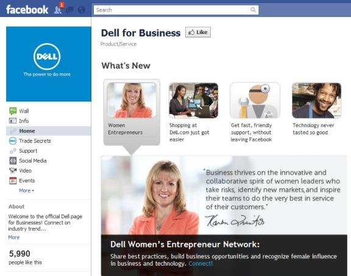

Trends in Technology
It has recently become a necessity for people to feel a sense of community, whether they be on a website or using a device. Comment sections on websites and forums dedicated to your problem make it easier for people to feel like part of a group.

- A few years ago, it became a necessity for websites to not only be designed for desktops, but to also have a functional mobile version. However, we know need to code for more than just desktop and mobile, as people are able to browse from not only their phones and computers, but their TVs, tablets, and gaming consoles. Their also needs to be a seamless flow when browsing between all of them. An option available on one platform needs to be available on all of them.

- One of the most important things for a business is for you to get your name out there, and the best way to do that is through social media. Having an active presence on Twitter, Facebook, and other social media platforms is an easy way to have people spread your name for you, and helps build a connection between you and your customers.